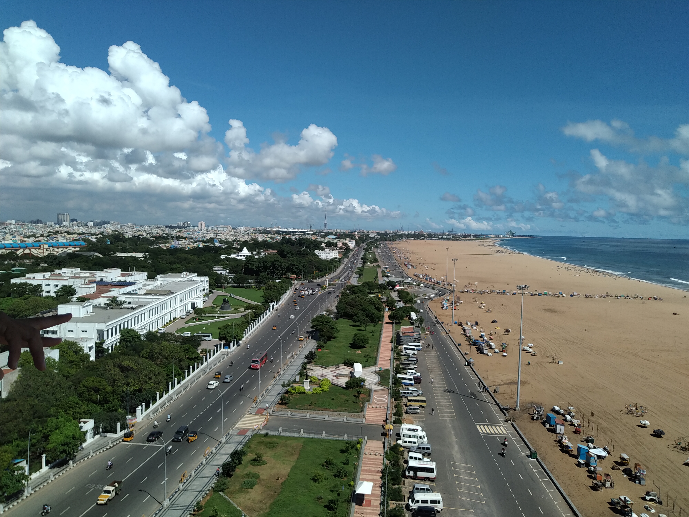
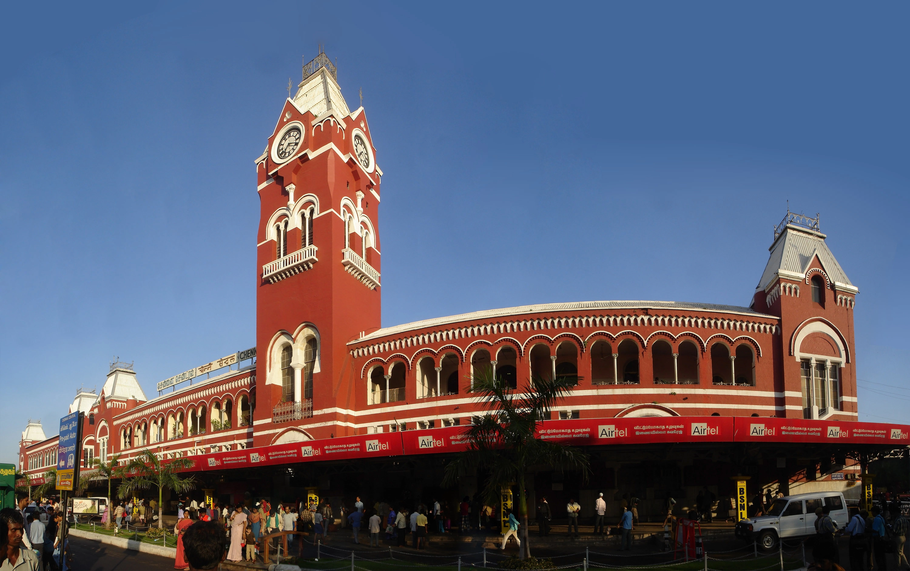
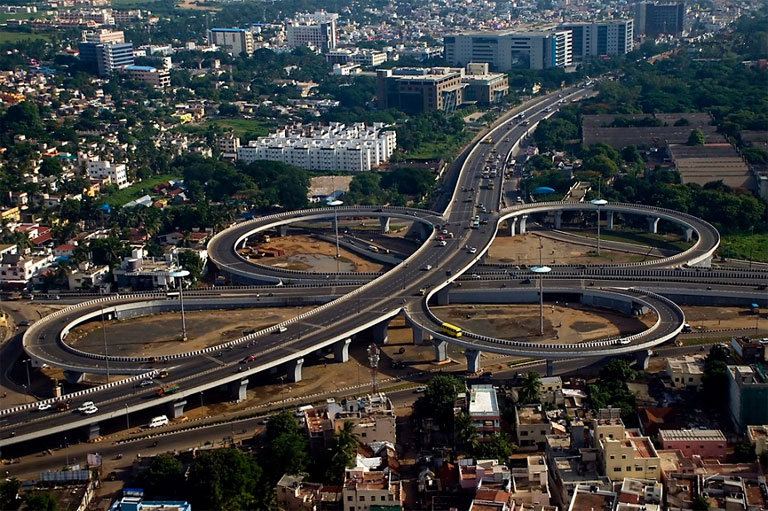
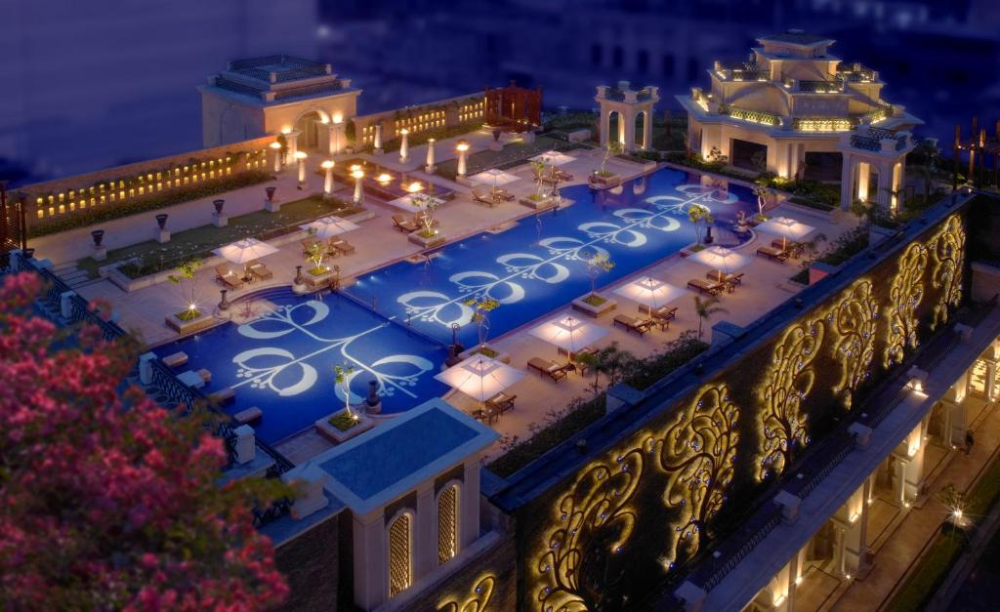
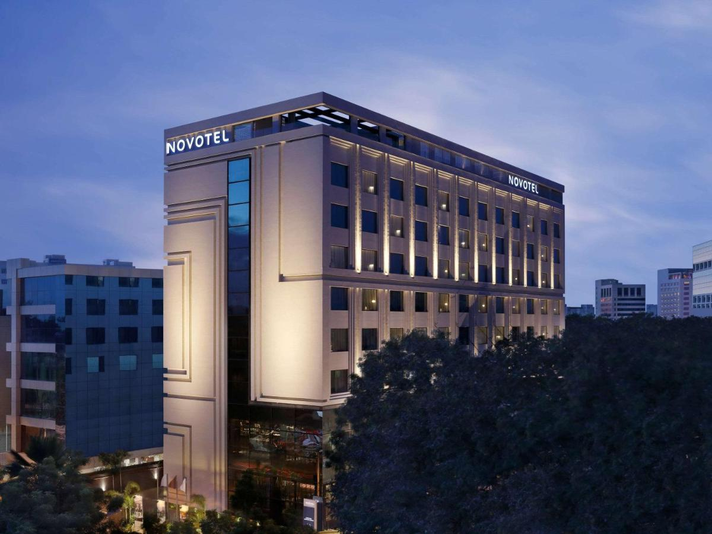
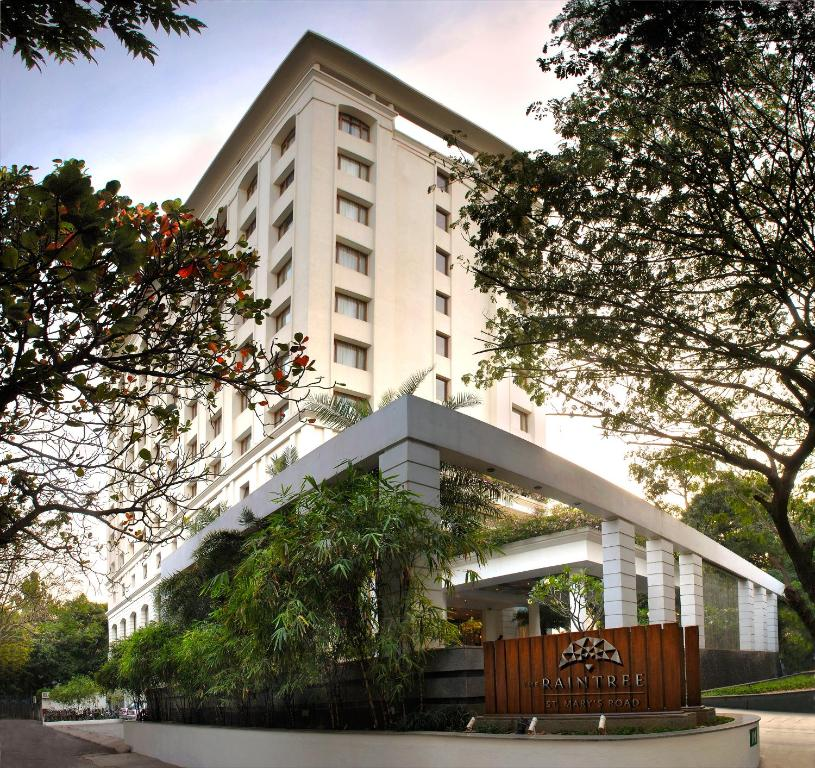
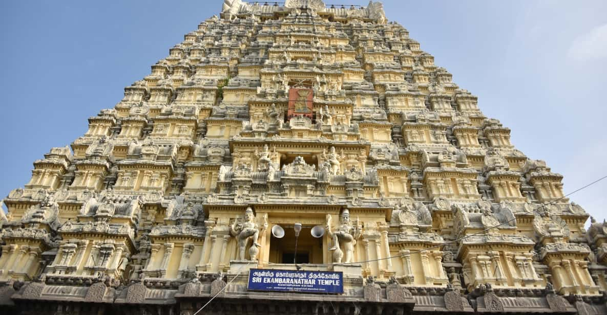

Chennai, on the Bay of Bengal in eastern India, is the capital of the state of Tamil Nadu. The city is home to Fort St. George, built in 1644 and now a museum showcasing the city’s roots as a British military garrison and East India Company trading outpost, when it was called Madras. Religious sites include Kapaleeshwarar Temple, adorned with carved and painted gods, and St. Mary’s, a 17th-century Anglican church.

The leela palace Chennai
Spread across 4.8 acres of peaceful land, the luxurious The Leela Palace Chennai offers an outdoor pool and a fitness centre. Its grand and well-designed rooms enjoy 24-hour room services. Free parking is available.

novotal Chennai chamiers road
Novotel Chennai Chamiers Road is located in the city centre near Anna Salai. The hotel is 10-min drive from T Nagar. This pet friendly hotel features a rooftop swimming pool overlooking city skylines and a 24 hour fitness center. All rooms offers LED TV, tea/coffee making facilities, 24-hour room service, mini bar, Bluetooth speakers, work desk and seating areas.

the raintree,st.mary's road
Located in the city centre and surrounded by lush greenery, The Raintree, St. Mary's Road, features 4 dining options, a rooftop swimming pool and rooms with a flat-screen TV. Free parking is provided. Free Wi-Fi is also available.

mahabalipuram,kanchipuram temples
Known as the City of Thousand Temples, Kanchipuram is known for its temple architectures, 1000-pillared halls, huge temple towers and silk saris.

santhome cathedral Chennai
Also known as St Thomas Cathedral Basilica and National Shrine of Saint Thomas, San Thome Church is a Roman Catholic minor basilica at Santhome in Chennai. It was built over the tomb of Saint Thomas in the 16th century by Portuguese explorers. In 1893, the British rebuilt it as a church with the status of a cathedral.

chennai rail museum
The Chennai Rail Museum is a railway museum in Chennai, Tamil Nadu, India. The museum opened on 16 April 2002 in the Furnishing Division of the Integral Coach Factory (ICF) near Perambur. The 6.25-acre (2.53 ha) museum has technical and heritage exhibits, with a sizable collection of steam engines from the British Raj. It also has vintage coaches (such as Ooty trains), which were endemic on Indian railways.